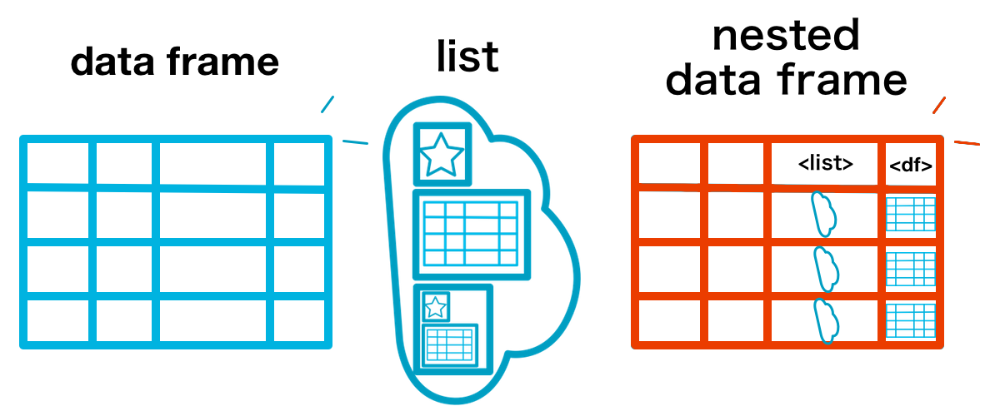

library(tidyr)2 データ整形および操作: tidyr, dplyrパッケージの基礎
前章において、Rでさまざまな処理が適用しやすいtidyデータについて述べたが、本章の前半で具体的に手持ちのデータをtidyな形式へ変換する方法を学ぶ。後半は、tidyに整理した後に実行するであろう、データの操作を紹介する。これらの方法はデータの種類に問わず、あらゆるデータで共通な、データの選択や抽出、加工、結合という処理を含んでおり、多くの場面で活用の機会がある。
2.1 データ自由自在
データのあり方が多種多様であることは前章で述べた通りである。そこで、雑多なデータを規則的な形式に整形し、コンピュータによる処理を適用しやすくしたものをtidyデータと言う。ここではtidyデータの条件として定義されている形式へとのデータ整形に有効な関数を備えたRパッケージとしてtidyrを取り上げる。
2.1.1 横長データと縦長データ
同一の対象について反復して記録を行ったデータを反復測定データ、経時観測データと呼ぶ。反復測定データの例として、ある植物個体の高さについて2015年4月から2017年3月まで毎月1回の記録を行ったデータを示そう。
# readrを使ったテキストファイルからのデータ読み込み方法は3章で解説する
df_wide <-
# 読み込み対象のファイルが置かれているパスをfile引数に指定して実行
readr::read_csv(file = "data/plants.csv",
col_types = readr::cols(
.default = readr::col_double(),
sp = readr::col_character()
))この植物データに記録された項目は”高さ”のみである。このデータは、対象が定まっているために記録の時期や回数を列として扱い、横方向に長くなる傾向がある。このデータは対象の経年変化を捉えやすいが、記録頻度の高いデータでは、対象全体について把握するのが困難となる。
一方でこのデータは次のように、変数として扱われている調査時期を変数として各項目として調査時期の値を、それに対応させる形で高さの変数とその計測値を記録した3変数のデータとして表現することも可能である。
このデータは調査の対象と回数が増えるほど縦に長くなる特徴がある。しかし、同時に複数の調査項目がある時には変数を追加し、同じファイルあるいはシートで管理できる。
1つの変数の値を複数の変数に分けて記録する横長データに対し、縦長データは項目と値の関係を1つの列とその値として完結させている。生物サイズの例では、もともと変数名に使われていた調査時期をperiodという列として定義し、サイズについてはperiodとひもづく形で記述するようになっている。これは各変数は独立した1つの列、1行につき1つの観測値というtidyデータの原則に従っている。
2.1.1.1 横長と縦長の相互変換
それではtidyrパッケージを使ってこのデータ変形を行ってみよう。植物データセットは現在、df_wideというオブジェクト名で保存されている。まずは今一度df_wideの列名を確認しよう。
names(df_wide) [1] "sp" "201504" "201505" "201506" "201507" "201508" "201509" "201510"
[9] "201511" "201512" "201601" "201602" "201603" "201604" "201605" "201606"
[17] "201607" "201608" "201609" "201610" "201611" "201612" "201701" "201702"
[25] "201703"一列目は”sp”という列で、個体を識別するための固有な値となっている。これは$演算子を使って列の項目をベクトル化させることで簡単に確認できる。
df_wide$sp[1] "a_1" "a_2" "b_1" "b_2" "c_1"df_wideの残りの列は数値で表され、調査が行われた時期が西暦月の値（2015年4月の場合は201504）が使われている。各列に含まれる値が高さの観測値である。これらの列は本質的に共通である変数（高さ）を扱っているので、調査時期と高さの観測値の組み合わせからなる列にすることができる。この処理を実行するにはgather()を利用する。
gather()は第一引数に与えたデータを対象として、キーバリューと呼ばれるkeyとvalueの2つの対となるデータ形式に整形する関数である。keyはvalueに記録される項目、valueにはkeyが扱う値が記録される。gather()ではkeyとvalueはそれぞれ第二、第三引数ので指定する。key引数は元のデータで変数として扱われていた名前が入る列で、value引数で指定した変数には、keyと対になる値が入る。またgather()を実行する時は、全ての変数名がvalueで指定した列に格納される候補となるので、変数として残す列は-を使ってgather()の対象から除外する必要がある。
植物データに対して、調査時期をkey、高さの観測値をvalueとしたキーバリュー形式を適用すると次のようになる。なお個体識別の列である”sp”列は変数として残しておくことに注意である。キーバリューでは、キーとする項目の数が増えるほど縦長のデータになる特徴がある。
# 横長から縦長データの変換
df_long <-
df_wide %>%
# key... 変数を元に作成される変数
# value... keyで対象となる変数の値を保存する変数
# 対象から除外する列は - を使って取り除く
gather(key = period, value = height, -sp)
head(df_long)# A tibble: 6 × 3
sp period height
<chr> <chr> <dbl>
1 a_1 201504 147.
2 a_2 201504 148.
3 b_1 201504 159.
4 b_2 201504 160.
5 c_1 201504 175.
6 a_1 201505 148.# sp列を除外しない場合、
# spの値を含めてキーバリュー形式に変形する
df_wide %>%
gather(period, height) %>%
head()# A tibble: 6 × 2
period height
<chr> <chr>
1 sp a_1
2 sp a_2
3 sp b_1
4 sp b_2
5 sp c_1
6 201504 147.34次に縦長になったデータを横長に戻す処理を実行しよう。spread()はgather()と対をなす関数で、key引数に指定された値を列名、value引数で指定された変数の値をその値として格納する。
# 縦長から横長への再変換
df_wide2 <-
df_long %>%
spread(key = period, value = height)
head(df_wide2, 3)# A tibble: 3 × 25
sp `201504` `201505` `201506` `201507` `201508` `201509` `201510` `201511`
<chr> <dbl> <dbl> <dbl> <dbl> <dbl> <dbl> <dbl> <dbl>
1 a_1 147. 148. 149. 149. 149. 149. 149. 149.
2 a_2 148. 148. 148. 149. 149. 149. 149. 150.
3 b_1 159. 160. 160. 160. 160. 160. 160. 160.
# … with 16 more variables: `201512` <dbl>, `201601` <dbl>, `201602` <dbl>,
# `201603` <dbl>, `201604` <dbl>, `201605` <dbl>, `201606` <dbl>,
# `201607` <dbl>, `201608` <dbl>, `201609` <dbl>, `201610` <dbl>,
# `201611` <dbl>, `201612` <dbl>, `201701` <dbl>, `201702` <dbl>,
# `201703` <dbl>2.1.2 複数列への分割
tidyデータへの整形の例として次に、1つの列で分割可能な値を扱っている場合の処理としてseparate()およびextract()を使った例を取り上げる。
植物データの”sp”列の値を見ると、「a_1」、「a_2」という規則性のある文字列になっている。これはa種の1番目の個体、a種の2番目の個体、…という具合に個体識別のために記録されているものである。一方で種aだけのデータや各種の1番目の個体について対象にした処理を加える際にはこの列は分割しておいた方が良い。このようなデータは複数列に分割するのがtidyデータとして適切である。ここでは引き続き、縦長になったdf_longを対象として、“sp”列の値を分割してみよう。
# 同一の変数内に複数の要素をもつデータを2つの変数に分割する
df_long %>%
separate(
# 分割対象の変数
col = sp,
# 区切り文字
sep = "_",
# 値を保存する列を指定する
into = c("species", "number"),
#
extra = "warn",
# removeは、col引数の値を残すかを定義する
remove = TRUE) %>%
head(3)# A tibble: 3 × 4
species number period height
<chr> <chr> <chr> <dbl>
1 a 1 201504 147.
2 a 2 201504 148.
3 b 1 201504 159.関数separateは引数colに分割対象とする変数名を指定し、into引数に分割したデータを格納する変数名を与えて実行することで、一つの列に含まれる値を複数の列へと分割する。分割の基準はsep引数で指定する。sepには既定値として正規表現の[^[:alnum:]]+によるパターンが与えられているが、任意の区切り文字やパターンを指定可能である。
separate()の仕様では、はじめにsepの値による値の分割が実施され、次にその値をinto列に代入するという流れになる。そのため、intoでの列数と分割後の要素数が一致しない場合、何らかの警告が表示される。また引数extraに既定の”warn”を指定していると、指定した列に含まれない、つまり以降の要素についてはデータから除去される。引数extraには”warn”と”drop”、“merge”の3つの値が指定できる。“warn”は既定値であり、要素と列の不一致に対する警告を表示する。“drop”では列に入りきらない値については警告も表示せずに切り落とす。“merge”を設定しておくと、切り落としは実行されず、列に入りきる状態でcolの値が分割される。代入先の変数の数が不足する場合や過剰な変数の指定についても同様に警告が表示される。この場合、要素が足りないものには欠損値が与えられる。
変数分割の処理として次にextract()の例を示す。extract()は、1つの列にまとまっている変数を引数regexに指定した正規表現などの基準によって複数の列に分割する。この関数の利用例として、行の中に複数の値が記録されている場合や、特定の基準によって変数を分割するべき状況が考えられる。
df_plants_sep <-
df_long %>%
extract(col = sp,
# 分割後の変数名を与える
into = c("species", "number"),
# 分割する文字列を指定する
regex = "([[:alnum:]]+)_([[:alnum:]]+)",
# 元の列は取り除く
remove = TRUE)
head(df_plants_sep, 3)# A tibble: 3 × 4
species number period height
<chr> <chr> <chr> <dbl>
1 a 1 201504 147.
2 a 2 201504 148.
3 b 1 201504 159.separate()やextract()により分割した変数を一つの変数に結合するにはunite()を利用する。unite()ではcol引数に結合した変数を格納する変数名を与え、残りの引数に結合対象の列を指定する。既定値では全ての変数が結合対象となる。
extract()を使って変数を分割したdf_plants_sepの列を再び一つの変数として結合した例を次に示す。species、numberの列の値をsepで指定した文字列”_“で結合し、新たにsp列として扱う、という処理である。
# unite()の引数sepで変数間の値をつなげる文字列を指定する
df_plants_sep %>%
unite(
# 新しく作成する変数の名前を指定
col = sp,
# 区切り文字として結合時に利用する文字列
sep = "_",
# 対象のデータフレームに含まれる変数名が結合に用いられる
species, number) %>%
head(3)# A tibble: 3 × 3
sp period height
<chr> <chr> <dbl>
1 a_1 201504 147.
2 a_2 201504 148.
3 b_1 201504 159.unite()にはremove引数が用意されており、既定ではTRUEが与えられている。これは結合に指定された元の変数を取り除くオプションである。
2.1.3 複数行への分割
一行に分割可能な値が記録されており、それを列ではなく行方向へ展開する場合に便利な関数としてseparate_rows()を紹介する。
例えば次のような、idごとに複数のタグが記録され、それがカンマ区切りで一つの変数(tag)に記録されたデータがあるとする。各タグにはそれと対応してスコアが与えられているが、その値もまた別の列(score)にカンマ区切りで記録されている。これをデータフレームの変数名はそのままに、タグとスコアを一対の関係として一行ごとに記録したデータへと整形しよう。
df_wide_col <-
tibble(
id = 1:3,
tag = c("apple,banana,melon", "grape,orange", "peer,mango,pine apple"),
score = c("0.7,0.5,0.4", "0.6,0.2", "0.7,0.4,0.3")
)
# tag, scoreは対応関係にある
df_wide_col# A tibble: 3 × 3
id tag score
<int> <chr> <chr>
1 1 apple,banana,melon 0.7,0.5,0.4
2 2 grape,orange 0.6,0.2
3 3 peer,mango,pine apple 0.7,0.4,0.3separate_rows()では、引数にデータフレームの変数名を与えて実行する。分割の対象となる区切り文字をsepで指定するが、この例では区切り文字は”,“となる。
df_wide_col %>%
separate_rows(tag, score, sep = ",") %>%
head()# A tibble: 6 × 3
id tag score
<int> <chr> <chr>
1 1 apple 0.7
2 1 banana 0.5
3 1 melon 0.4
4 2 grape 0.6
5 2 orange 0.2
6 3 peer 0.7 関数を実行すると、タグの項目とスコアが一行ずつ記録されたデータになったことが確認できるが、scoreが文字列のデータとなっていることに注意しよう。separate_rows()の処理は、元の変数のデータ型を引き継ぐため、分割後の変数も文字列のままである。そのため分割後のデータ型を見直すためのオプションとして、separate_rows()では引数convertが用意される。convert引数でTRUEを指定した際、変換可能な変数がある場合、以下の例の通り、データ型の自動変換が行われる。
df_wide_col %>%
separate_rows(tag, score, sep = ",", convert = TRUE) %>%
head(3)# A tibble: 3 × 3
id tag score
<int> <chr> <dbl>
1 1 apple 0.7
2 1 banana 0.5
3 1 melon 0.42.1.4 入れ子データ
文字列や因子型の変数は、グループとして共通の処理を施したり、グループごとの値を参照することがある。標準関数ではsplit()によるデータの分割が可能であるが、これは対象がデータフレームであっても返り値はリストである。そこで、データフレームの構造を維持したままデータをグループに分割するにはnest()が有効となる。
nest()の実行例として、sp、period、heightの3列からなる次のデータを、調査個体ごとのデータとして扱えるようにする処理を示す。
head(df_long)# A tibble: 6 × 3
sp period height
<chr> <chr> <dbl>
1 a_1 201504 147.
2 a_2 201504 148.
3 b_1 201504 159.
4 b_2 201504 160.
5 c_1 201504 175.
6 a_1 201505 148.df_nest <-
df_long %>%
nest(period, height)Warning: All elements of `...` must be named.
Did you want `data = c(period, height)`?df_nest# A tibble: 5 × 2
sp data
<chr> <list>
1 a_1 <tibble [24 × 2]>
2 a_2 <tibble [24 × 2]>
3 b_1 <tibble [24 × 2]>
4 b_2 <tibble [24 × 2]>
5 c_1 <tibble [24 × 2]>nest()はデータフレームを第一引数にとり、関数内で指定されたデータフレーム中の変数を別のデータフレームとして処理し、入れ子のように新たな変数として格納する。このような、大きさ(データフレームの場合は行数)が異なるデータを、データフレームの一変数として扱うデータ構造を本書では入れ子データ nested data frameと呼ぶ。
nest()により、入れ子としてまとめられるデータは変数dataに格納される（これは引数keyで指定した名前に変更することができる）。入れ子のデータを確認するには、変数dataを参照する。
# spがa_1の値かならるデータを格納する
df_nest$data[[1]]# A tibble: 24 × 2
period height
<chr> <dbl>
1 201504 147.
2 201505 148.
3 201506 149.
4 201507 149.
5 201508 149.
6 201509 149.
7 201510 149.
8 201511 149.
9 201512 150.
10 201601 150.
# … with 14 more rows変数の指定方法は、既定では全ての変数が対象となっている。すなわち対象のデータフレーム中の変数名が与えられない場合はデータフレーム自体を入れ子にする。変数の指定方法は、入れ子にする変数名を直接与える他、列番号、コロン(“:”)を使った連続した変数の選択、マイナス記号(“-”)による除外などが可能である。
# これらの処理は上記の処理と等しい
# - で入れ子に含めない変数を与える
df_long %>%
nest(-sp)
# 列番号による指定
df_long %>%
nest(2, 3)
df_long %>%
nest(period:height)# 変数名を指定しない場合は全ての変数を入れ子に含める
df_long %>%
nest()Warning: `...` must not be empty for ungrouped data frames.
Did you want `data = everything()`?# A tibble: 1 × 1
data
<list>
1 <tibble [120 × 3]>
入れ子を解除するには、unnest()を使う。これにより入れ子データとする前のデータ構造が復元される。
df_nest %>%
unnest()unnest()にはいくつかのオプションが備わっている。例えばunnest()を実行した時に用いられる変数名は、入れ子に含まれていた元の変数名であるが、.sepで、nest()を実行した時の入れ子の変数名(.data引数で調整。既定値はdata)に続けて任意の文字列を含ませるようになる。
# 入れ子データを展開した時の変数名を "data_(元の変数名)" とする
df_nest %>%
unnest(.sep = "_")またunnest()は、データ型が等しい、リストの要素を一行ずつ展開する機能も備えている。例えば次のようにlist列に、行ごとに長さの異なるベクトルがリストとして格納されているデータに対して、1行に要素の1つの値を含んだデータへ変換する。
# 長さの異なる要素をもつリストの列を含んだデータフレームを用意
(df <-
tibble(
id = 1:3,
list = list("a" = 1,
"b" = 2:3,
"c" = 4:6)))# A tibble: 3 × 2
id list
<int> <named list>
1 1 <dbl [1]>
2 2 <int [2]>
3 3 <int [3]> # .id引数は、展開されたデータを識別するのに有効である
df %>%
unnest(.id = "list_id")Warning: `cols` is now required when using unnest().
Please use `cols = c(list)`Warning: The `.id` argument of `unnest()` is deprecated as of tidyr 1.0.0.
Manually create column of names instead.
This warning is displayed once every 8 hours.
Call `lifecycle::last_lifecycle_warnings()` to see where this warning was generated.# A tibble: 6 × 3
id list list_id
<int> <dbl> <chr>
1 1 1 a
2 2 2 b
3 2 3 b
4 3 4 c
5 3 5 c
6 3 6 c 2.2 柔軟なデータ操作
tidyverseにはデータ操作のためのパッケージとしてdplyrが整備されている。dplyrパッケージは”A Grammar of Data Manipulation”を掲げ、データ操作を文法として捉え、複雑になりがちなデータ操作を簡潔に記述することを可能としている。dplyrの機能を見るため、以下のコードを実行し、パッケージとデータセットを利用可能なようにしておこう。データは前章で扱ったtreesデータとmtcarsデータである。
# dplyrパッケージの読み込み
library(dplyr)
data("trees")
data("mtcars")2.2.1 データ操作における5つの工程
データに行う基本操作は、選択、抽出、並び替え、集計、加工の5工程に分けられる。データ分析の前処理として、これらの操作を組み合わせデータを加工したあとで、可視化やモデリング、分析関数を実施することになるだろう。
dplyrパッケージではこれらのデータ操作のための処理を個別の関数として提供する。加工と選択を実行する関数はそれぞれmutate()およびtransmute()、select()であり、抽出はfilter()、summarise()による集計、並び替えはarrange()で実行される。
選択 select: 必要な変数を参照・抽出する、不要な変数を削除する
抽出 filter: 特定の条件に一致する値を取り出す
並び替え arrange: 変数内の項目の順序を変更する
集計 summarise: データ全体あるいはグループ別の代表値・統計量等の算出
加工 mutate, transmute: 値の単位・尺度などを変更する、新たな列を追加する
これらのデータ操作関数の特徴は、基本的にはtidyverseの原則に従い、第一引数に対象のデータ、上記の5つの関数は全てデータフレームをとり、関数内部で処理内容を記述するという形式をとる。dplyrのフレームワークでは、関数名はデータに適用する「動詞」、その内容を「文法」として表現する。
2.2.2 データを抽出する: filter
データ抽出とは、データからあるまとまりを取り出すことである。部分集合を抽出すると言い変えても良い。filter()は比較・論理演算子を用いた条件指定を行い、条件に該当するデータ (TRUEとなる値)を返す関数である。関数の第一引数には対象のデータをとり、以降に条件式を記述して実行する。
条件式は、左辺に対象の変数を指定して不等号を挟んで右辺に比較する値を与える、という記述となる。treesの”Volume”列の値が52以上のデータを抽出するコードは次のようになる。
# filter()では比較演算子を用いたデータ抽出を実行する
trees %>% filter(Volume >= 52.0) Girth Height Volume
1 17.3 81 55.4
2 17.5 82 55.7
3 17.9 80 58.3
4 20.6 87 77.0このコードの「文法」を読み解いてみよう。データ抽出を実行するfilter()に、treesをパイプ演算子で対象に与えている。続く第二引数に、具体的な条件を指定しているが、ここで注目すべきは”Volume”列の参照に$演算子を必要とせず、変数名を直接指定することである。dplyrを使ったデータ操作では、主な対象がデータ自身とその変数になるため、変数を参照する$は省略可能になっている。
複数の条件を指定して抽出をする場合、カンマ (,)あるいは縦線 (|)により条件となる処理を区切る。ここでカンマは「かつ and」であり、縦線は「または or」である。次の実行例は「Heightが65より小さい、またはVolumeが52以上の行を抽出」する。
trees %>% filter(Height < 65 | Volume >= 52.0) Girth Height Volume
1 8.8 63 10.2
2 13.8 64 24.9
3 17.3 81 55.4
4 17.5 82 55.7
5 17.9 80 58.3
6 20.6 87 77.0| 演算子 | 効果 |
|---|---|
> |
左辺が右辺より大きい |
>= |
左辺が右辺より大きいか等しい |
< |
左辺が右辺より小さい |
<= |
左辺が右辺より小さいか等しい |
== |
左辺と左辺が一致する |
!= |
左辺と左辺不一致 |
| |
論理和 (2つの条件式のいずれかが真) |
& |
論理積 (2つの条件式が共に真) |
一つの変数に複数の条件を与える場合、|と同等の機能をもつ%in%演算子を利用することもできる。%in%演算子はmatch()関数の機能を演算子として提供するもので、左辺ベクトルから右辺のベクトルの値を抽出する。
# 2つの処理結果は等しい
trees %>% filter(Height == 70 | Height == 81)
# %in%演算子を使い、左辺に含まれる右辺のベクトルの値を抽出する
mtcars %>% filter(cyl %in% c(6, 8))また数値を対象にとり、範囲指定による抽出がbetween()を用いることで可能である。この関数は第一引数に対象の数値ベクトル、第二、第三引数で下限と上限を指定し、範囲に含まれるかを論理値で返す。この関数をfilter()に用いた例を以下に示す。
# disp列の値が200から300までの値を抽出する
mtcars %>% filter(between(disp, 200, 300))2.2.2.1 欠損値を含む変数に対するfilter()の働き
欠損値を含んだ変数についてfilter()を実行した結果を確かめておこう。filter()では記述した条件に従う値を取り出すという処理が適用されるため、下記のコードを実行すると欠損値を含んだ行は除外される。
d <- tibble(var = c(1, 2, NA, 4, 5))
d %>% filter(var >= 2)# A tibble: 3 × 1
var
<dbl>
1 2
2 4
3 5変数varが2以上の値の抽出に欠損値を含んだ行を加えるにはどうすれば良いだろうか。これには縦線による「または」の条件に欠損値である値を指定すると良い。
d %>% filter(var >= 2 | is.na(var))# A tibble: 4 × 1
var
<dbl>
1 2
2 NA
3 4
4 52.2.2.2 位置を利用した抽出
特定の変数の値が大きいあるいは小さいものから何行か分の抽出を行いたい、という時にはtop_n()やnth()などの関数が役立つ。
top_n()は対象をデータフレームとし、引数で行数や基準となる変数を指定する(初期値では第一番目の変数が基準となる)。
d <- tibble(var = 1:5)
# var変数が大きな値から2行抽出する
d %>% top_n(n = 2L, wt = var)# A tibble: 2 × 1
var
<int>
1 4
2 5# -演算子をつけて降順での抽出を行う
d %>% top_n(-2L, var)# A tibble: 2 × 1
var
<int>
1 1
2 2一方、nth()やfirst()、last()はベクトルを対象にとり、それぞれ、任意の位置の値、先頭、末尾の値を抽出する。そのためfilter()と組み合わせて利用することも可能である。
first(d$var)[1] 1nth(d$var, 2)[1] 2d %>% filter(var == first(var))# A tibble: 1 × 1
var
<int>
1 1d %>% filter(var == last(var))# A tibble: 1 × 1
var
<int>
1 5d %>% filter(var == nth(var, 2))# A tibble: 1 × 1
var
<int>
1 22.2.2.3 重複を除いた抽出
データから重複した行を取り除いたユニークなデータへ加工するには関数distinct()を用いる。引数に重複のある変数を指定することで、重複を除いた値を返す。一方で変数名を指定した実行では対象外の変数は初期値では削除されてしまうので、ユニークにする処理を行いつつ他の変数を残す場合は.keep_allでTRUEを指定する必要がある。またこの時、ユニークに扱う変数以外の値は、重複のある行の第一行目の値が選択される。
d <- tibble(
var = c(1, 2, 1, 3, 4),
var2 = c("A", "B", "A", "A", "D"),
var3 = c(1.0, 1.0, 1.0, 2.0, 2.3)
)
# データ全体から重複する行を除く
d %>% distinct()# A tibble: 4 × 3
var var2 var3
<dbl> <chr> <dbl>
1 1 A 1
2 2 B 1
3 3 A 2
4 4 D 2.3# 引数に指定した変数の重複を解消する
d %>% distinct(var2)# A tibble: 3 × 1
var2
<chr>
1 A
2 B
3 D # .keep_allを指定することで
# ユニークな値として扱いつつ他の変数も残す
d %>% distinct(var2, var3, .keep_all = TRUE)# A tibble: 4 × 3
var var2 var3
<dbl> <chr> <dbl>
1 1 A 1
2 2 B 1
3 3 A 2
4 4 D 2.3また、ベクトルに含まれるユニークな値の数を数えるn_distinct()もある。この関数はlength(unique(x))のラッパとして機能するが幾分か処理が高速であり、欠損値をカウントに含めないための引数na.rmが用意されている。
# 欠損を含んだベクトルを生成
# 3および欠損値 NAが重複
x <- c(NA, 2, 3, 3, NA, 5)
x %>% n_distinct() # NAを含めたユニークな要素の和[1] 4x %>% n_distinct(na.rm = TRUE) # 欠損を含めないユニークな要素数[1] 32.2.2.4 選択した行を抽出する
データの抽出方法として、filter()のような条件指定による抽出とは別に、slice()を利用した位置を指定したデータ抽出がある。これはRで標準的に利用可能なhead()やtail()のようにデータの特定の行を抽出する関数であるが、抽出対象の位置が指定可能な点で異なっている。
# 3行目のデータを抽出
trees %>% slice(3L) Girth Height Volume
1 8.8 63 10.2# 抽出対象の行数を指定する
trees %>% slice(c(1, 3, 6)) Girth Height Volume
1 8.3 70 10.3
2 8.8 63 10.2
3 10.8 83 19.72.2.2.5 データの一部を無作為に抽出: sample_n / sample_frac
データからランダムに一部を取り出す時にsample_n()およびsample_frac()が役立つ。これらは引数sizeで指定した条件でいずれも無作為にデータフレームの特定行を抽出する関数であるが、その違いはsample_n()は具体的に行数を、sample_frac()はデータ全体の行数から抽出するデータの行数の割合を指定するということになる。なお無作為抽出の際に復元抽出を認めるreplaceオプションを用意している(既定値ではFALSE)。
# mtcarsデータセットの行数を確認
mtcars %>% nrow()[1] 32# 無作為抽出により5行分のデータを抽出
mtcars %>% sample_n(5) mpg cyl disp hp drat wt qsec vs am gear carb
Fiat X1-9 27.3 4 79.0 66 4.08 1.935 18.90 1 1 4 1
Ferrari Dino 19.7 6 145.0 175 3.62 2.770 15.50 0 1 5 6
Ford Pantera L 15.8 8 351.0 264 4.22 3.170 14.50 0 1 5 4
Maserati Bora 15.0 8 301.0 335 3.54 3.570 14.60 0 1 5 8
Fiat 128 32.4 4 78.7 66 4.08 2.200 19.47 1 1 4 1# 復元抽出による無作為抽出
# Toyota Corolla の行が複数回抽出されている点に注意
set.seed(1234)
mtcars %>% sample_n(4, replace = TRUE) mpg cyl disp hp drat wt qsec vs am gear carb
Lotus Europa 30.4 4 95.1 113 3.77 1.513 16.90 1 1 5 2
Lincoln Continental 10.4 8 460.0 215 3.00 5.424 17.82 0 0 3 4
Fiat X1-9 27.3 4 79.0 66 4.08 1.935 18.90 1 1 4 1
Dodge Challenger 15.5 8 318.0 150 2.76 3.520 16.87 0 0 3 2# sample_frac()ではデータセット全体の行数に対する割合を指定
mtcars %>% sample_frac(0.1) mpg cyl disp hp drat wt qsec vs am gear carb
Hornet Sportabout 18.7 8 360.0 175 3.15 3.44 17.02 0 0 3 2
Merc 450SE 16.4 8 275.8 180 3.07 4.07 17.40 0 0 3 3
Cadillac Fleetwood 10.4 8 472.0 205 2.93 5.25 17.98 0 0 3 42.2.3 データフレームからの変数選択: select
select()はデータフレームから特定の列(変数)を選択するのに用いられる。選択対象は関数内部で指定された変数になる。対象の変数の列が並ぶ時は:を使って表記を省略できる。また対象の変数の前に記号-をつけることで選択から除外することもできる。
# 変数名を与え、2列を選択する
trees %>%
select(Height, Volume) %>%
dim()[1] 31 2# 列番号による変数の選択
trees %>%
select(c(1, 3)) %>%
colnames()[1] "Girth" "Volume"# 除外する列名は - で指定する
# mtcarsデータセットのdispからwtまでの列を削除する
mtcars %>%
select(-(disp:wt), 3) %>%
head() mpg cyl qsec vs am gear carb disp
Mazda RX4 21.0 6 16.46 0 1 4 4 160
Mazda RX4 Wag 21.0 6 17.02 0 1 4 4 160
Datsun 710 22.8 4 18.61 1 1 4 1 108
Hornet 4 Drive 21.4 6 19.44 1 0 3 1 258
Hornet Sportabout 18.7 8 17.02 0 0 3 2 360
Valiant 18.1 6 20.22 1 0 3 1 225# 選択した列の順に変数名が並び替えられる
trees %>%
select(Volume, Height) %>%
colnames()[1] "Volume" "Height"2.2.3.1 変数名の変更: rename
関数selectでは関数内部で変更後の変数名 = 変更前の変数名と指定すると選択時に列名の変更ができる。ただしselect()は、変数を選択する関数であり、選択しなかった変数はデータフレームから除外される。そのため変数名の変更には関数renameを用いるか、あるいはeverything()を使い、全ての変数を選択すると良い。
# 変更後 = 変更前、の形式で変数名を記述することで変数名の変更が行われる
# select()では選択した変数名以外は取り除かれる
trees %>%
select(height = Height) %>%
colnames()[1] "height"# rename()では他の変数に影響を与えずに変数名の変更を行う
trees %>%
rename(height = Height) %>%
colnames()[1] "Girth" "height" "Volume"# everything()により他の変数名を残す
# ただし変数の並びが変更されることに注意
trees %>%
select(height = Height, everything()) %>%
colnames()[1] "height" "Girth" "Volume"2.2.3.2 変数選択の補助関数
select_helpers関数群を利用すると効率的な変数選択が可能になる。これらの関数は、例えば先ほど紹介した「全ての変数を選択する」everything()をはじめとして、「XXXで始まる変数」、「XXXとマッチする」というようなパターンマッチや条件指定による選択を実行する。
d <- tibble(
x_col = 7,
y_col = c("あ", "い", "う"),
var_1 = letters[1:3],
var_2 = 9:7,
var_3 = c(0.1, NA, 0.4),
var_z = rnorm(3)
)
# データの変数名を確認
d %>% colnames()[1] "x_col" "y_col" "var_1" "var_2" "var_3" "var_z"# 'var'で始まる変数を選択する
d %>%
select(starts_with("var")) %>%
colnames()[1] "var_1" "var_2" "var_3" "var_z"# 'col'で終わる変数を選択
d %>%
select(ends_with("col")) %>%
colnames()[1] "x_col" "y_col"# 'co'を含んだ変数を選択
d %>%
select(contains("co")) %>%
colnames()[1] "x_col" "y_col"# 正規表現を用いたマッチングによって変数を選択する
d %>%
select(matches(".ar_[0-9]")) %>%
colnames()[1] "var_1" "var_2" "var_3"# 任意の文字列と数値の組み合わせからなる変数を選択
d %>%
select(num_range("var_", 1:3)) %>%
colnames()[1] "var_1" "var_2" "var_3"# 任意の変数集合の中から該当する列を選択
d %>%
select(one_of(c("var_1", "x_col"))) %>%
colnames()[1] "var_1" "x_col"# すべての変数を選択
d %>%
select(y_col, var_z, everything()) %>%
colnames()[1] "y_col" "var_z" "x_col" "var_1" "var_2" "var_3"select_helpers関数群は、select()以外の関数、tidyrを始めたとしたtidyverseに含まれるパッケージでも利用可能である。またtidyselectというパッケージでの開発が進んでおり、将来的にはこちらのパッケージに移植される可能性がある。
2.2.4 データの並び替え: arrange
データの並び替えは、単純に見た目を良くするためや、集計や加工のために順番を変更する、という理由で行われる。この処理は関数arrangeにより実行する。例えばtreesデータセットでは、Girth列の大きさによってデータが並べられているが、他の変数を基準として順序を入れ替えるという処理を行う時、次のようにする。
# treesではGirthの大きさでデータが並ぶ
trees %>% head() Girth Height Volume
1 8.3 70 10.3
2 8.6 65 10.3
3 8.8 63 10.2
4 10.5 72 16.4
5 10.7 81 18.8
6 10.8 83 19.7# Height列を基準とした昇順並び替えを行う
trees %>%
arrange(Height) %>%
head() Girth Height Volume
1 8.8 63 10.2
2 13.8 64 24.9
3 8.6 65 10.3
4 11.0 66 15.6
5 11.7 69 21.3
6 8.3 70 10.3arrange()はデータを任意の変数を基準に並び替える。この時の並びは昇順となるが、降順指定するにはdesc()を併用する。なお基準とする変数の値が数値型である場合は-をつけて降順の指定が可能である。
# 降順に並び替えるにはdesc()や-演算子を用いる
trees %>%
arrange(desc(Girth)) %>%
head() Girth Height Volume
1 20.6 87 77.0
2 18.0 80 51.5
3 18.0 80 51.0
4 17.9 80 58.3
5 17.5 82 55.7
6 17.3 81 55.4# 数値からなる変数では - で降順指定が可能
trees %>%
arrange(-Height, -Volume) %>%
head() Girth Height Volume
1 20.6 87 77.0
2 13.3 86 27.4
3 12.9 85 33.8
4 10.8 83 19.7
5 17.5 82 55.7
6 17.3 81 55.42.2.5 変数に対する処理: mutate / transmute
データフレームの既存の変数に処理を加えたり、新たな列を追加するにはmutate()およびtransmute()を利用する。これらの関数では、引数内で算術演算や任意の関数を指定し、データの変数をベクトルとして引数に渡すことが可能である。形式としては、mutate(データ, 変更後の変数 = 処理内容)という具合になる。次の例は「treesに、各行のGirth列に2.54を乗した値をgirth_cmという列を追加する」という処理である。
trees %>%
mutate(girth_cm = Girth * 2.54) %>%
head(3) Girth Height Volume girth_cm
1 8.3 70 10.3 21.082
2 8.6 65 10.3 21.844
3 8.8 63 10.2 22.352mutate()では、引数で指定した変数名を追加するが、対象のデータに存在する場合、変数の値を上書きする。
trees %>%
mutate(Height = as.character(Height),
Volume_round = round(Volume, digits = 0)) %>%
head(3) Girth Height Volume Volume_round
1 8.3 70 10.3 10
2 8.6 65 10.3 10
3 8.8 63 10.2 10mutate()と似た機能をもつ関数としてtransmute()がある。その違いはmutate()では変更を加えなかった列も残るのに対し、transmute()では引数内部で指定した処理の結果からなるデータフレームを返す点にある。
# transmute()では実行結果のみからなるデータフレームを返す
trees %>%
transmute(girth_cm = Girth * 2.54) %>%
head(3) girth_cm
1 21.082
2 21.844
3 22.3522.2.5.1 ベクトルを対象とした値の操作
dplyrでは、ベクトルを対象にしたデータ操作の関数が備わっており、中にはベクトル内の欠損を処理する関数もある。いずれの関数もmutate()内外で利用できる。これらの関数はそれぞれ表XXに示すような差異がある。
| 関数 | 特徴 |
|---|---|
case_when() |
ベクトルの各要素に対する挙動を指定。指定しない場合には欠損値として扱われる |
recode() |
ベクトル内の特定の値だけを変更する。変換後の型に注意 |
if_else() |
ifelse()の拡張。条件式とその結果に対する処理を定義する。欠損値に対する挙動も指定できる |
na_if() |
特定の値を欠損値へと変換する |
coalesce() |
欠損値を特定の値へと変換する |
関数if_elseは条件式および、条件式について真・偽であった時の挙動をそれぞれ引数の値として指定して実行する。treesのHeight列の値をベクトルとして参照し、各要素が80より大きければ”large”、小さければ”small”を返す例を次に示す。
if_else(condition = trees$Height > 80,
true = "large",
false = "small") [1] "small" "small" "small" "small" "large" "large" "small" "small" "small"
[10] "small" "small" "small" "small" "small" "small" "small" "large" "large"
[19] "small" "small" "small" "small" "small" "small" "small" "large" "large"
[28] "small" "small" "small" "large"なおif_else()では変換に用いる値のデータ型は統一されている必要がある。特に欠損値として処理させる場合、NA_integerのようにデータ型についても指定しなければならない点に注意である。
# 返り値を欠損値とする場合は
# 真・偽の結果でデータ型を揃える必要がある
x <- c(trees$Height, NA)# 整数と実数を区別するため、データ型の不一致によるエラーとなる
if_else(condition = x > 80, 1L, 0)
# Error: `false` must be type integer, not double# いずれの返り血も整数型であるので処理は実行される
if_else(condition = x > 80, 1L, 0L) [1] 0 0 0 0 1 1 0 0 0 0 0 0 0 0 0 0 1 1 0 0 0 0 0 0 0
[26] 1 1 0 0 0 1 NA# 真であるときの返り値が整数値なので
# 偽であるときの返り値も整数型の欠損値にする
if_else(condition = x > 80, 1L, NA)
# Error: `false` must be type integer, not logicalif_else(condition = x > 80, 1L, NA_integer_) [1] NA NA NA NA 1 1 NA NA NA NA NA NA NA NA NA NA 1 1 NA NA NA NA NA NA NA
[26] 1 1 NA NA NA 1 NA引数missingは欠損値への処理を指定するために利用できる。
if_else(condition = x > 80, 1L, 0L, missing = -99L) [1] 0 0 0 0 1 1 0 0 0 0 0 0 0 0 0 0 1 1 0
[20] 0 0 0 0 0 0 1 1 0 0 0 1 -99if_else()では、関数の中で指定できる条件は一つなので、より複数の条件を設定するには入れ子としてさらにif_else()を記述することが可能である。ただしこのような場合には次のcase_when()やrecode()のように複数の条件が指定可能な関数を利用するのが適切である。
case_when()は複数の条件分岐をベクトルに適用するのに用いられる。通常の関数とは引数の指定方法が異なっており、関数内部で条件式と、TRUEとなる場合の変更後の値をチルダ記号（~）で繋いでformulaとして記述する(「対象の値 == 条件式 ~ 変換後の値」)。条件文はカンマによって区切られるが、宣言の順に値の評価が実行される。また対象のベクトルが、記述したいずれかの条件に一致しない場合には欠損値として扱わるという点については注意が必要である。
# treesデータセットのGirthの値に応じて指定した文字列を返す
case_when(
trees$Girth <= 12 ~ "small",
trees$Girth <= 13 ~ "medium",
trees$Girth > 13 ~ "large"
) [1] "small" "small" "small" "small" "small" "small" "small" "small"
[9] "small" "small" "small" "small" "small" "small" "small" "medium"
[17] "medium" "large" "large" "large" "large" "large" "large" "large"
[25] "large" "large" "large" "large" "large" "large" "large" ベクトルの特定の値を変更したい時にはrecode()も利用できる。この関数も引数内で「対象の値 = 変換後の値」を記述する形式となるように、対象となる値を直接記述するのがcase_when()との違いである。また、変更後の値が指定されていない要素には元の値が採用されるが、引数.defaultに与えた値を利用することもできる。
# mtcarsデータセットのcylの値を変更する
recode(mtcars$cyl, `4` = "四", `6` = "六", `8` = "八") [1] "六" "六" "四" "六" "八" "六" "八" "四" "四" "六" "六" "八" "八" "八" "八"
[16] "八" "八" "四" "四" "四" "四" "八" "八" "八" "八" "四" "四" "四" "八" "六"
[31] "八" "四"# 変更後の値を指定しない時の挙動 (.default)と、欠損値の変更を.missingにより指定する
recode(c(mtcars$cyl, NA),
`4` = "四",
`8` = "八",
.default = "その他",
.missing = "なし") [1] "その他" "その他" "四" "その他" "八" "その他" "八" "四"
[9] "四" "その他" "その他" "八" "八" "八" "八" "八"
[17] "八" "四" "四" "四" "四" "八" "八" "八"
[25] "八" "四" "四" "四" "八" "その他" "八" "四"
[33] "なし" # 文字列ベクトルに数値を混ぜることはできない
recode(mtcars$cyl, `4` = "四", `6` = "六", `8` = 8.0)
# Error: Vector 3 must be type character, not double欠損値を処理する関数na_if()はベクトル中の欠損値を対象に、y引数で指定された特定の値への変換する。coalesce()は対象と同じ長さのベクトルを与えることで、欠損値を同じ要素の位置の値で置換する。また、長さが異なるベクトルとして1つの値が与えられた時は、その値が繰り返し使われる。
x <- c(1, "", 3, 4)
# ベクトル中の "" を欠損値へ変換
x %>% na_if(y = "")[1] "1" NA "3" "4"x <- c(1, 2, NA, NA, 5)
x %>% coalesce(2)[1] 1 2 2 2 5# 欠損値が含まれる3, 4番目の要素を
# 3, 4へと置換
coalesce(x,
c(NA, NA, 3, 4, 5))[1] 1 2 3 4 52.2.5.2 値を前後にずらす: lead / lag
植物データのように行ごとに調査時期と数値のキーペアからなる反復測定データでは、1つ前の期間との差分を求めたり、2つの期間の合計値を求める、などの処理を実施することがある。この処理を実行するには、対象のベクトルの要素を前後にずらして参照する機能をもつlead()およびlag()を利用する。
次の例は5つの要素をもつベクトルxにlead()を適用した物である。lead()、lag()は引数nで対象ベクトルの基準となる位置を前後に調整する。ベクトルを参照した時、元の長さ以上の位置にある要素にはNAが与えられるが、これはdefault引数により任意の値に変更可能である。
x <- 1:5
# n の既定値には1が与えられている
x %>% lead()[1] 2 3 4 5 NA# 3つ後ろの要素を参照
x %>% lead(3)[1] 4 5 NA NA NA# defaultによりNAの値を変更
x %>% lead(3, default = 0)[1] 4 5 0 0 0この関数を用いて植物データの各個体の高さ成長が調査時期でどれだけ増えたかを確認しよう。ここでは簡潔な結果を示すために一個体分のデータを用いることにする。
# 植物データ (data/plants.csv)を
# tidyrを用いて縦長にしたデータを利用する
# a_1個体のみを抽出し (filter)、
# periodの並びにする (arrange)
d <-
df_long %>%
filter(sp == "a_1") %>%
arrange(period)
d %>% head()# A tibble: 6 × 3
sp period height
<chr> <chr> <dbl>
1 a_1 201504 147.
2 a_1 201505 148.
3 a_1 201506 149.
4 a_1 201507 149.
5 a_1 201508 149.
6 a_1 201509 149.d$height[2] - d$height[1][1] 0.16ここで2015年4月と次の調査時期である2015年5月の値を見ると、1増えていることがわかる。これをlag()で算出しよう。
d %>%
mutate(growth = height - lag(height))# A tibble: 24 × 4
sp period height growth
<chr> <chr> <dbl> <dbl>
1 a_1 201504 147. NA
2 a_1 201505 148. 0.160
3 a_1 201506 149. 1.17
4 a_1 201507 149. 0.0800
5 a_1 201508 149. 0.220
6 a_1 201509 149. 0.170
7 a_1 201510 149. 0.160
8 a_1 201511 149. 0.150
9 a_1 201512 150. 0.110
10 a_1 201601 150. 0.0400
# … with 14 more rows2.2.5.3 順位や割合、累積和を求める: ranking / cumall
ベクトル内の要素の順位や割合を求めるための関数群がrankingとして提供されている。これを用いて、次のデータフレームの変数varの値へ順位に関する関数を適用する例を紹介する。
d <- tibble(
var = c(1:5, 3, NA)
)
mutate(d,
# 行の順番に番号を与える
row_number = row_number(),
# 指定の変数の昇順での順位を与える。
# 同位値がある場合、同位の数が順位に影響する
min_rank = min_rank(var),
# 同位値の数とは関係なく、連続した順位が与えられる
dense_rank = dense_rank(var),
# 順位を0から1の範囲で示す
percent_rank = percent_rank(var),
# 順位を積み上げ、全体での割合を示す
cume_dist = cume_dist(var),
# データを引数nで指定した値で分割した時のグループ
ntile = ntile(var, n = 2))# A tibble: 7 × 7
var row_number min_rank dense_rank percent_rank cume_dist ntile
<dbl> <int> <int> <int> <dbl> <dbl> <int>
1 1 1 1 1 0 0.167 1
2 2 2 2 2 0.2 0.333 1
3 3 3 3 3 0.4 0.667 1
4 4 4 5 4 0.8 0.833 2
5 5 5 6 5 1 1 2
6 3 6 3 3 0.4 0.667 2
7 NA 7 NA NA NA NA NANAの扱いについては、関数により処理が異なる点に注意である。なおこれらの関数内においても、降順並び替えのためのdesc()や-演算子が利用可能である。
| 関数 | 処理内容 |
|---|---|
row_number() |
行番号 |
min_rank() |
順位(同位値には同じ順位を与える。同位値の数を含めて次の順位が考慮される) |
dense_rank() |
順位(同位値には同じ順位を与え、以降の順には連続した順位が割り振られる) |
percent_rank() |
順位のパーセント(0から1の範囲) |
cume_dist() |
順位の積み上げ値に対する割合(累積比率) |
ntile() |
指定した群数に分割 |
2.2.6 集計値を求める: summarise
summarise()は、データ全体あるいはグループに要約統計量を算出するのに役立つ。
treesの3つの変数に対し、平均 mean()、最大値 max()、標準偏差 sd()を求める処理は以下のようになる。
# 各変数の要約統計量を求める
trees %>% summarise(
mean_girth = mean(Girth),
max_height = max(Height),
sd_volume = sd(Volume)) mean_girth max_height sd_volume
1 13.24839 87 16.43785データに共通の項目、すなわちグループがある場合、グループごとの集計値を求めるにはsummarise()とgroup_by()を組み合わせて利用する。group_by()は引数に与えた変数をグループとして扱い、以降の処理をグループ単位で適用する。返り値はデータフレームであるがgrouped_dfというクラスが与えられている。
# mtcarsデータセットをcylの値ごとにグループ化する
grp_mtcars <-
mtcars %>%
group_by(cyl)
class(grp_mtcars)[1] "grouped_df" "tbl_df" "tbl" "data.frame"例えば、mtcarsの車種のシリンダ (気筒)数ごとの1ガロンあたりの平均走行距離を求めるには次のようなコードを実行する。グループに含まれる値は水準として扱われ、ここでの水準はcylに含まれる4、6、8の3水準である。
# summarise()の処理は水準ごとに出力される
grp_mtcars %>%
summarise(mean_mpg = mean(mpg))# A tibble: 3 × 2
cyl mean_mpg
<dbl> <dbl>
1 4 26.7
2 6 19.7
3 8 15.1一つの変数を元にグループ化を実行した場合、summarise()やmutate()関数を適用した後はグループ化が解除されるが、複数の変数からグループを作成した場合、グループの解除はungroup()を使い明示的に実行する必要がある。
# 複数の変数でグループを作る
# cylのグループ化は継続する
mtcars %>%
group_by(cyl, gear) %>%
summarise(mean_mpg = mean(mpg))`summarise()` has grouped output by 'cyl'. You can override using the `.groups`
argument.# A tibble: 8 × 3
# Groups: cyl [3]
cyl gear mean_mpg
<dbl> <dbl> <dbl>
1 4 3 21.5
2 4 4 26.9
3 4 5 28.2
4 6 3 19.8
5 6 4 19.8
6 6 5 19.7
7 8 3 15.0
8 8 5 15.4# ungroup()でグループを解除する
mtcars %>%
group_by(cyl, gear) %>%
summarise(mean_mpg = mean(mpg)) %>%
ungroup()`summarise()` has grouped output by 'cyl'. You can override using the `.groups`
argument.# A tibble: 8 × 3
cyl gear mean_mpg
<dbl> <dbl> <dbl>
1 4 3 21.5
2 4 4 26.9
3 4 5 28.2
4 6 3 19.8
5 6 4 19.8
6 6 5 19.7
7 8 3 15.0
8 8 5 15.42.2.6.1 グループのカウント
要素数を数える関数としてn()が提供されている。これをグループ化したデータフレームに実行すると、各グループの数を求めるのに便利である。次の処理は、cyl列でグループ化したmatcarsの各cylの値がどれだけ含まれるかを数えた物である。
grp_mtcars %>%
summarise(n = n())# A tibble: 3 × 2
cyl n
<dbl> <int>
1 4 11
2 6 7
3 8 14また、単にグループの数を求めるという処理の場合には上記の記述を簡略化させたtally()やcount()を用いると良い。tally()とcount()、前者ではあらかじめグループ化されたデータを渡す(summarise(n = n())のラッパー関数として動作する)が、後者では引数でグループ化する変数を指定する点が異なる。2つの関数には引数sortがあり、TRUEを指定することで降順並び替えを実行する。
# tallyではgroup_by()によりグループ化をあらかじめ実行しておく
mtcars %>%
group_by(cyl, gear) %>%
tally()# A tibble: 8 × 3
# Groups: cyl [3]
cyl gear n
<dbl> <dbl> <int>
1 4 3 1
2 4 4 8
3 4 5 2
4 6 3 2
5 6 4 4
6 6 5 1
7 8 3 12
8 8 5 2# count()では引数に含めた変数をグループ化してカウントを実施する
mtcars %>%
count(cyl, gear) cyl gear n
1 4 3 1
2 4 4 8
3 4 5 2
4 6 3 2
5 6 4 4
6 6 5 1
7 8 3 12
8 8 5 2mtcars %>%
count(cyl, gear, sort = TRUE) cyl gear n
1 8 3 12
2 4 4 8
3 6 4 4
4 4 5 2
5 6 3 2
6 8 5 2
7 4 3 1
8 6 5 1なお、summarise()を含め、グループ化したデータのカウントを求める関数では、返り値がデータの集約結果となっているが、add_tally()またはadd_count()を使うことで、データフレームの他の変数に影響を及ぼさずにカウント値を算出し、列として追加することができる。
mtcars %>%
group_by(cyl) %>%
add_tally() %>%
colnames() [1] "mpg" "cyl" "disp" "hp" "drat" "wt" "qsec" "vs" "am" "gear"
[11] "carb" "n" # sortの並び替えがデータフレームに対して有効になる
mtcars %>%
add_count(cyl, sort = TRUE) %>%
head() mpg cyl disp hp drat wt qsec vs am gear carb n
1 18.7 8 360.0 175 3.15 3.44 17.02 0 0 3 2 14
2 14.3 8 360.0 245 3.21 3.57 15.84 0 0 3 4 14
3 16.4 8 275.8 180 3.07 4.07 17.40 0 0 3 3 14
4 17.3 8 275.8 180 3.07 3.73 17.60 0 0 3 3 14
5 15.2 8 275.8 180 3.07 3.78 18.00 0 0 3 3 14
6 10.4 8 472.0 205 2.93 5.25 17.98 0 0 3 4 14グループに関する補助関数として、水準数や水準ごとの件数を出力する関数が用意されている。
# グループとなっている変数を確認する
groups(grp_mtcars)[[1]]
cyl# グループの水準数を数える
n_groups(grp_mtcars)[1] 3# グループの水準に含まれる件数を出力
group_size(grp_mtcars)[1] 11 7 142.2.6.2 グループに対するsummarise以外のデータ操作
グループ化されたデータフレームに対する処理はsummarise()以外でも適用できる。引き続き、mtcarsのcylについてグループ化したデータを対象に、グループ化されたデータフレームが対象となることで挙動の変化する関数の例を見ていこう。
まずslice()でデータの任意の行のデータを抽出する際、グループ化されたデータが対象の場合、グループの各要素の位置からデータを返却する。cylは3つの要素をもつ変数なので、次の処理を実行すると、各グループの要素の値について出力を得る。
# グループ化されていないため、
# データ全体から1行を返す
mtcars %>% slice(1L) mpg cyl disp hp drat wt qsec vs am gear carb
Mazda RX4 21 6 160 110 3.9 2.62 16.46 0 1 4 4# 各グループのデータの先頭から1行抽出。
grp_mtcars %>% slice(1L)# A tibble: 3 × 11
# Groups: cyl [3]
mpg cyl disp hp drat wt qsec vs am gear carb
<dbl> <dbl> <dbl> <dbl> <dbl> <dbl> <dbl> <dbl> <dbl> <dbl> <dbl>
1 22.8 4 108 93 3.85 2.32 18.6 1 1 4 1
2 21 6 160 110 3.9 2.62 16.5 0 1 4 4
3 18.7 8 360 175 3.15 3.44 17.0 0 0 3 2# グループの要素から各1行返す
grp_mtcars %>% slice(n())# A tibble: 3 × 11
# Groups: cyl [3]
mpg cyl disp hp drat wt qsec vs am gear carb
<dbl> <dbl> <dbl> <dbl> <dbl> <dbl> <dbl> <dbl> <dbl> <dbl> <dbl>
1 21.4 4 121 109 4.11 2.78 18.6 1 1 4 2
2 19.7 6 145 175 3.62 2.77 15.5 0 1 5 6
3 15 8 301 335 3.54 3.57 14.6 0 1 5 8# 各グループからサイズ数のデータを無作為に抽出
grp_mtcars %>% sample_n(2)# A tibble: 6 × 11
# Groups: cyl [3]
mpg cyl disp hp drat wt qsec vs am gear carb
<dbl> <dbl> <dbl> <dbl> <dbl> <dbl> <dbl> <dbl> <dbl> <dbl> <dbl>
1 21.5 4 120. 97 3.7 2.46 20.0 1 0 3 1
2 24.4 4 147. 62 3.69 3.19 20 1 0 4 2
3 18.1 6 225 105 2.76 3.46 20.2 1 0 3 1
4 21 6 160 110 3.9 2.88 17.0 0 1 4 4
5 15.8 8 351 264 4.22 3.17 14.5 0 1 5 4
6 15.2 8 276. 180 3.07 3.78 18 0 0 3 3各グループの最大値あるいは最小値を求めるという処理は、次のようにarrange()と組み合わせることで実現可能になる。
# wtが小さい順に各グループから2行ずつ抽出
grp_mtcars %>%
arrange(wt) %>%
slice(1:2L)# A tibble: 6 × 11
# Groups: cyl [3]
mpg cyl disp hp drat wt qsec vs am gear carb
<dbl> <dbl> <dbl> <dbl> <dbl> <dbl> <dbl> <dbl> <dbl> <dbl> <dbl>
1 30.4 4 95.1 113 3.77 1.51 16.9 1 1 5 2
2 30.4 4 75.7 52 4.93 1.62 18.5 1 1 4 2
3 21 6 160 110 3.9 2.62 16.5 0 1 4 4
4 19.7 6 145 175 3.62 2.77 15.5 0 1 5 6
5 15.8 8 351 264 4.22 3.17 14.5 0 1 5 4
6 15.2 8 304 150 3.15 3.44 17.3 0 0 3 2同様にsample_n()やdistinct()などのデータ抽出に関する関数もグループ化の影響を受ける。
mtcars %>% distinct(carb, .keep_all = TRUE) %>%
nrow()[1] 6# 各グループのcarbの値がユニークに処理される
grp_mtcars %>% distinct(carb, .keep_all = TRUE) %>%
nrow()[1] 9ベクトルの値を前後にずらすlead-lagもグループ化されたデータが対象の際に挙動が変化する。これを利用して、1個体分の高さ成長量を求めた処理を植物データ全体に適用可能になる。
df_long %>%
arrange(sp, period) %>%
group_by(sp) %>%
mutate(growth = height - lag(height)) %>%
ungroup()# A tibble: 120 × 4
sp period height growth
<chr> <chr> <dbl> <dbl>
1 a_1 201504 147. NA
2 a_1 201505 148. 0.160
3 a_1 201506 149. 1.17
4 a_1 201507 149. 0.0800
5 a_1 201508 149. 0.220
6 a_1 201509 149. 0.170
7 a_1 201510 149. 0.160
8 a_1 201511 149. 0.150
9 a_1 201512 150. 0.110
10 a_1 201601 150. 0.0400
# … with 110 more rows2.2.7 複数列へのデータ操作関数の適用: _at / _if / _all
dplyrを使ったデータ操作の関数群では、例えば「共通の接頭語をもつ変数」「文字列である変数」「すべての変数」というような複数の列を同時に処理するための効率的な方法が提供されている。*_at()、*_if()、*_all()である。これらの複数列への処理が可能な関数の原形は、データ操作の基本として本章で取り上げてきたmutate()、transmute()、select()、filter()、summarise()、group_by()、arrange()がある。
例えば全ての変数の平均値をmean()を使って求めるという処理をsummarise()関数を使うと次のような記述となるが、summarise()の処理を全変数に適用するsummarise_all()を使うことで簡略化できる。
# 各変数の平均値を求める
trees %>%
summarise(mean_girth = mean(Girth),
max_height = mean(Height),
sd_volume = mean(Volume)) mean_girth max_height sd_volume
1 13.24839 76 30.17097# summarise_allではデータフレームの全列に関数を適用する
trees %>%
summarise_all(.funs = mean) Girth Height Volume
1 13.24839 76 30.17097# 文字列で指定しても良い
trees %>%
summarise_all(.funs = "mean")
# 関数名を.funsに指定するとエラーになる
trees %>%
summarise_all(.funs = mean())
# Error in mean.default() : argument "x" is missing, with no default*_all()では関数内の引数として、対象のデータに含まれる全ての列に適用する関数名を文字列で指定し、その関数に適用する引数を記述する。すなわち、先の例で各列に適用した関数はmean()であったがmean()の引数trimを有効にするには次のようにする必要がある。
# mean()を全ての列に適用するが、
# meanは文字として定義する
trees %>%
summarise_all(mean, trim = 2) Girth Height Volume
1 12.9 76 24.2一方でfuns()を使うことで関数呼び出しのリストを生成することも可能である。この場合、表現式はラムダ式で記述する。
# 次の3つの実行結果は全て等しい
trees %>%
summarise_all(funs(mean(x = ., trim = 2)))Warning: `funs()` was deprecated in dplyr 0.8.0.
Please use a list of either functions or lambdas:
# Simple named list:
list(mean = mean, median = median)
# Auto named with `tibble::lst()`:
tibble::lst(mean, median)
# Using lambdas
list(~ mean(., trim = .2), ~ median(., na.rm = TRUE))
This warning is displayed once every 8 hours.
Call `lifecycle::last_lifecycle_warnings()` to see where this warning was generated. Girth Height Volume
1 12.9 76 24.2trees %>%
summarise_all(function(x) {
mean(x, trim = 2)
}) Girth Height Volume
1 12.9 76 24.2trees %>%
summarise_all(funs(mean), trim = 2) Girth Height Volume
1 12.9 76 24.2いずれの実行結果も各列の変数名を保持しているが、変数名はfuns(変数名 = 適用する関数名)の形式で調整できる。
# 処理後の列名を変更する
trees %>%
summarise_all(funs(heikin = mean), trim = 2) Girth_heikin Height_heikin Volume_heikin
1 12.9 76 24.2*_all()は、データフレームがもつすべての変数に対し任意の関数を適用するが、変数のデータ型が異なる場合には意図しない出力結果となることがあるので注意が必要である。例えば、先の例ではmean()をすべての変数に実行したが、文字列型の変数が含まれている場合には欠損値や警告が出力される。このような時には、より柔軟に関数の適用範囲を指定する*_if()や*_at()を利用すると良い。
*_if()は、関数を適用する変数の条件を指定し、その条件に合うものに任意の関数を処理できるようになっている。また*_at()は、適用する変数を明示的あるいは補助関数 (変数選択の補助関数を参考)をvars()と組み合わせて指定すると良い。
次の例はselect_at()、select_if()を利用して条件に従う変数を選択するものである。1番目はvars()を用いて任意の変数名をベクトルとして与え、一致する変数名の列を選択する、という処理になる。2番目の処理は、vars()内部で変数選択の補助関数の一種end_with()により条件指定を実行している。最後は関数を定義しているが、ここで引数xには各変数がベクトルで与えられる。この例では変数のベクトルの合計値が1000以下となる変数を選択するようにしている。ここで注意なのは、対象のデータに数値以外のデータ型の変数が含まれる場合、この処理はエラーになることである。
# 選択する変数名を直接指定する
mtcars %>%
select_at(vars(c("mpg", "cyl", "gear"))) %>%
names()[1] "mpg" "cyl" "gear"# end_with()を使い、pで終わる変数を選択する
mtcars %>%
select_at(vars(ends_with("p"))) %>%
names()[1] "disp" "hp" # 各列の合計値が1000以下となる変数を選択
trees %>%
select_if(function(x) sum(x) < 1000) %>%
names()[1] "Girth" "Volume"summarise_all()などの関数は、適用する関数の形式（*_all()、_at()、_if()）に応じて、第二引数以降で指定する引数が異なっている。特定の変数を対象とする*_atでは.vars、条件に従う変数を対象にする*_ifでは.predicateである。これらはいずれも変数の適用範囲を指定するのに用いられる。そして処理する関数を与える。データ操作の「文法」としては、対象のデータを指定し、その変数の適用範囲を決めたのちに処理する内容を述べる、という具合になる。
mtcars %>%
select_at(vars("mpg", "vs", "am")) %>%
# vsからamまでを論理値に変換
mutate_at(vars(vs:am), as.logical) %>%
head(10) mpg vs am
Mazda RX4 21.0 FALSE TRUE
Mazda RX4 Wag 21.0 FALSE TRUE
Datsun 710 22.8 TRUE TRUE
Hornet 4 Drive 21.4 TRUE FALSE
Hornet Sportabout 18.7 FALSE FALSE
Valiant 18.1 TRUE FALSE
Duster 360 14.3 FALSE FALSE
Merc 240D 24.4 TRUE FALSE
Merc 230 22.8 TRUE FALSE
Merc 280 19.2 TRUE FALSE2.2.8 データの結合
これまでdplyrのデータ操作関数の振る舞いについて紹介してきたが、次は2つのデータを結合する処理について見ていこう。データフレームの結合には、bind_rows()とbind_cols()を用いる方法と、join関数群を使う方法とがある。
2.2.8.1 行・列方向による結合: bind_rows / bind_cols
まずbind_rows()、bind_cols()だが、この関数は結合するデータの方向性、すなわち行を増やすのか、列を追加するのか、により使い分ける。bind_rows()では結合対象のデータの変数名が共通である場合にデータを追加する。共通でない変数名が含まれる場合、それらの列をもたない行については欠損値が与えられる。一方bind_cols()は列の結合を実施する関数であり、与えるデータの行数が一致していなければいけない。
treesを使って結合の例を示そう。まずtreesを10行ごとに分割したオブジェクトを作成し、これをbind_rows()で結合する。
trees_x <- trees[1:10, ]
trees_y <- trees[11:20, ]
trees_z <- trees[21:nrow(trees), ]
bind_rows(trees_x, trees_y) %>%
dim()[1] 20 3bind_rows()やbind_cols()では、引数に与えたデータを対象に結合の処理を行うが、これらのデータ数に制約はない。つまり複数のデータを一度に結合する処理も可能なのである。
bind_rows(trees_x, trees_y, trees_z) %>%
dim()[1] 31 3次にbind_cols()の例であるが、結合の方向が異なるだけでbind_rows()と差異はない。treesの列ごとに結合を行おう。
bind_cols(trees[1], trees[2], trees[3]) %>% dim()[1] 31 32.2.8.2 リレーショナルデータの結合: _join
dplyrパッケージの*_join関数群を使ったデータフレームの結合は、2つのデータのいずれかに含まれる値を結合したり、共通する項目を除外したりと応用範囲の広い結合関数である。基本は引数x、yに共通の変数をもった対象のデータフレームを指定し、by引数で変数名を記述する、という形式になる。
*_join関数群の例を見ていくために用意した2つのデータを用意しよう。df1は変数:x”と”y”をもつ。またdf2は変数”x”、“z”をもっている。どちらも3行2列のデータフレームであり、共通する変数は”x”である。
# 模擬のデータフレームを生成する
(df1 <- tibble(x = c("A", "B", "C"),
y = 1:3))# A tibble: 3 × 2
x y
<chr> <int>
1 A 1
2 B 2
3 C 3(df2 <- tibble(x = c("A", "B", "D"),
z = c(TRUE, FALSE, TRUE)))# A tibble: 3 × 2
x z
<chr> <lgl>
1 A TRUE
2 B FALSE
3 D TRUE *_join関数群には2種類の結合形式があるが、一つの結合形式は、left_join()、inner_join()など、別テーブルと共通する変数を照合し、一致する行に該当する別テーブルの変数を追加する結合の方法である。
left_join(x = df1, y = df2, by = "x")# A tibble: 3 × 3
x y z
<chr> <int> <lgl>
1 A 1 TRUE
2 B 2 FALSE
3 C 3 NA この例ではleft_join()で変数xをbyに指定している。2つのデータのx変数で共通な値は”A”と”B”である。この共通の値が含まれるdf2の変数をdf1に結合するのがleft_join()の働きとなる。
結合を行う際、2つのデータフレームを紐付ける一つ以上の変数が必要であることが*_join()の働きを理解するのに重要である。この役割は引数byにより指定する。またby引数に指定する変数のデータ型は2つのデータで共通でなければならないという制約がある(変数名が同じであっても文字列型と数値型の変数では失敗する)。
dplyrではデータフレームに共通する変数名を自動的に検出し、それを結合に利用する。そのためby引数の指定は必須ではない。しかし後でコードを見返したときのため、どの変数をキーとしたかをコードとして記述しておくことが好ましい。
# byの指定をしなくても
# 自動的に結合が行われる
df1 %>% left_join(df2)Joining, by = "x"# A tibble: 3 × 3
x y z
<chr> <int> <lgl>
1 A 1 TRUE
2 B 2 FALSE
3 C 3 NA 結合する変数名がデータフレーム間で異なる場合には、引数byの値をc(col_a = COL_A)のように互いの変数名を紐付ける指定をする。先ほどleft_join()を用いた結合結果を示したdf1の変数xをrename()を使って変更し、その処理を見てみよう。
# 共通する変数名が存在しないためエラーになる
df1 %>%
rename(X = x) %>%
left_join(df_y)
# Error: `by` required, because the data sources have no common variablesdf1 %>% rename(X = x) %>%
left_join(df2, by = c("X" = "x"))# A tibble: 3 × 3
X y z
<chr> <int> <lgl>
1 A 1 TRUE
2 B 2 FALSE
3 C 3 NA *_join関数群で扱う対象データのうち、引数xに与えられるデータを特にマスタと呼ぶ。left_join()はマスタに指定したデータに変更を加えるが、マスタに含まれる情報が失われることはない。次に、*_joinの複数の種類を扱うが、*_join関数群の中で利用頻度の高い関数となるだろう。
left_join()と同様の働きをもつright_join()があるが、これは引数yのデータをマスタとして扱う関数である。そのため次の結果はdf1 %>% left_join(df2)と同じデータを返すが、注意すべきなのは変数の並びがdf2に含まれる変数が先に与えられている点である。
df2 %>% right_join(df1, by = "x")# A tibble: 3 × 3
x z y
<chr> <lgl> <int>
1 A TRUE 1
2 B FALSE 2
3 C NA 3df1 %>% inner_join(df2, by = "x")# A tibble: 2 × 3
x y z
<chr> <int> <lgl>
1 A 1 TRUE
2 B 2 FALSEdf1 %>% full_join(df2, by = "x")# A tibble: 4 × 3
x y z
<chr> <int> <lgl>
1 A 1 TRUE
2 B 2 FALSE
3 C 3 NA
4 D NA TRUE inner_join()は引数byで指定された変数の値をもつ行について結合を実施する。full_join()は2つのデータに含まれる全ての変数を結合する。
left_join()、right_join()、full_join()のような結合形式は外部結合として知られる。外部結合で一致しない行に追加される変数の値には欠損値が与えられる。一方、inner_join()は内部結合と呼ばれる。
left_join()等の結合を利用する際、値の重複がある場合には注意が必要である。次の例は変数xを共通してもつ2つのデータの結合であるが、df2の変数xには”A”の値が複数出現しており、それぞれが異なるzの値をもっている。この状態だとx = "A", z = TRUE、x = "A", z = FALSEの2パターンである。このように結合する値がユニークに扱えない時、結合は一致する観測値のすべての組み合わせを返す。この機能は複数変数の組み合わせからなるデータを生成するのに役立つだろう。
df1 <- tibble(x = c("A", "B", "C"),
y = 1:3)
df2 <- tibble(x = c("A", "B", "D", "A"),
z = c(TRUE, FALSE, TRUE, FALSE))
df1 %>% left_join(df2, by = "x")# A tibble: 4 × 3
x y z
<chr> <int> <lgl>
1 A 1 TRUE
2 A 1 FALSE
3 B 2 FALSE
4 C 3 NA df1 %>% inner_join(df2, by = "x")# A tibble: 3 × 3
x y z
<chr> <int> <lgl>
1 A 1 TRUE
2 A 1 FALSE
3 B 2 FALSE*_join()群のもう一つの結合形式は、これまで見てきたleft_join()などの関数が変数を追加する結合であったのに対して変数には影響することはない。マスタとするデータの変数は保持されるが、行について影響する結合となる。このような結合は、結合結果の不一致を確認するのに役立つだろう。
semi_join()は2つのデータに含まれる、引数byで指定した変数で共通する行を抽出する。anti_join()はマスタにのみ含まれる行を抽出する。
df1 %>% semi_join(df2, by = "x")# A tibble: 2 × 2
x y
<chr> <int>
1 A 1
2 B 2df1 %>% anti_join(df2, by = "x")# A tibble: 1 × 2
x y
<chr> <int>
1 C 32.3 まとめ
- 多様なデータの表現形式と、コンピュータ処理に適したtidyデータへの相互変換の方法を学んだ。tidyrパッケージを使うことで、データを柔軟に変形することが可能になる。
- dplyrはデータ操作を「文法」として表現するパッケージで、基本的なデータ処理である、選択、抽出、並び替え、集計、加工の5工程を実行する関数をそれぞれ提供する。
- dplyrはtidyデータの利用を前提としており、関数内部ではデータフレームの変数名を指定した処理が中心となる。
- dplyrが提供する結合関数は、変数の対応関係を考慮したリレーショナルな処理も行える。